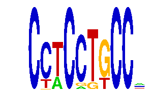

family_24 |
|---|
|  |
| Download PWM |
| Download instances (motifs) |
| Show motif distribution |
Query_ID | Query_Consensus | Subject_Name | Source_DB | Subject_ID | Length | Orientation | Offset | Divergence | Overlap | Subject_Consensus |
|---|---|---|---|---|---|---|---|---|---|---|
| family_24 | CCTCCTGCCN | Stat3 | JASPAR | MA0144.1 | 10 | as given | 5 | 0.723 | 5 | TTCCAGGAAG |
Sequence | Start_position (from start) | Start_position (from end) | Average conservation | Best conservation score | Instance_with_best_CS | Best_Z-score | Instance_with_best_ZS | Strand |
|---|---|---|---|---|---|---|---|---|
| chr11:107371381-107372381 | 972 | 982 | 0.4899 | 0.853 | CCWCSTGCC. | 13.183106 | CCWCSTGCC. | -1 |
| chr7:36471731-36472731 | 213 | 223 | 0.5834 | 0.861 | CYWCCTGCC. | 13.934195 | CSWCCTGCC. | -1 |
| chr14:66588950-66589950 | 163 | 173 | 0 | 0 | CYWCCTGCC. | 13.407315 | CYWCCTGCC. | 1 |
| chr8:97951095-97952095 | 73 | 83 | 0.3198 | 0.981 | CCTCCKKCC. | 14.021829 | CCTCCKKCC. | 1 |
| chr1:137695826-137696826 | 829 | 839 | 0.0003 | 0.001 | CCTCMTGCCM | 12.710033 | CSTCCTGCC. | -1 |
| chr8:28373687-28374687 | 238 | 248 | 0.6718 | 0.973 | CYWCCTGCC. | 13.407315 | CYWCCTGCC. | -1 |
| chr17:48571335-48572335 | 891 | 901 | 0.6786 | 1 | CSWCCTGCC. | 14.3987465 | CCWCCTGCCM | -1 |
| chr14:104078739-104079739 | 430 | 440 | 0.3495 | 0.47 | CCTCCKKCC. | 14.021829 | CCTCCKKCC. | -1 |
| chr8:87888211-87889211 | 544 | 554 | 0.4149 | 0.63 | CYWCCTGCC. | 13.934195 | CSWCCTGCC. | 1 |
| chr8:28382682-28383682 | 642 | 652 | 0.0178 | 0.028 | CYWCCTGCC. | 13.407315 | CYWCCTGCC. | -1 |
| chr6:47697996-47698996 | 923 | 933 | NA | NA | CCWCSTGCC. | 13.183106 | CCWCSTGCC. | 1 |
| chr17:87970461-87971461 | 711 | 721 | 0.0098 | 0.02 | CYWCCTGCC. | 13.407315 | CYWCCTGCC. | -1 |
| chr4:129472154-129473154 | 352 | 362 | 0.2192 | 0.669 | CCTCMTGCCM | 14.3987465 | CCTCMTGCCM | -1 |
| chr7:51729362-51730362 | 401 | 411 | 0.0188 | 0.025 | CSTCSTGCC. | 12.710033 | CCTCCTGCC. | 1 |
| chr19:7256653-7257653 | 278 | 288 | 0.7029 | 0.992 | CYWCCTGCC. | 13.407315 | CYWCCTGCC. | 1 |
| chr7:135349261-135350261 | 475 | 485 | 0.9274 | 1 | CCTCCKKCC. | 14.3987465 | CCTCMTGCCM | 1 |
| chr5:33576744-33577744 | 912 | 922 | 0.004 | 0.006 | CCTCCKKCC. | 14.021829 | CCTCCKKCC. | 1 |
| chr13:30613042-30614042 | 277 | 287 | 0.0026 | 0.004 | CCTCMTGCCM | 14.3987465 | CCTCMTGCCM | 1 |
| chr4:140977485-140978485 | 495 | 505 | 0.0006 | 0.002 | CYWCCTGCC. | 13.183106 | CCWCSTGCC. | 1 |
| chr13:114670382-114671382 | 618 | 628 | 0.7728 | 1 | CCTCCKKCC. | 14.021829 | CCTCCKKCC. | 1 |
| chr11:5797717-5798717 | 102 | 112 | 0.000714286 | 0.003 | CCWCCTGCCM | 14.3987465 | CCTCMTGCCM | 1 |
| chr4:134730734-134731734 | 856 | 866 | 0.9997 | 1 | CCTCCTGCC. | 12.710033 | CSTCSTGCC. | 1 |
| chrX:20193686-20194686 | 535 | 545 | 0.8588 | 1 | CCTCMTGCCM | 12.710033 | CCTCSTGCC. | 1 |
| chr6:86437151-86438151 | 653 | 663 | 0.2101 | 0.274 | CCTCCKKCC. | 14.021829 | CCTCCKKCC. | -1 |
| chr11:114059629-114060629 | 956 | 966 | 0.0005 | 0.004 | CCWCCTGCCM | 14.3987465 | CCTCMTGCCM | -1 |
| chr4:134722044-134723044 | 800 | 810 | 0.0039 | 0.014 | CCTCSTGCC. | 12.710033 | CCTCCTGCC. | 1 |
| chr10:120332764-120333764 | 238 | 248 | 0.0021 | 0.008 | CYWCCTGCC. | 13.407315 | CYWCCTGCC. | -1 |
| chr19:10299281-10300281 | 727 | 737 | 0.0059 | 0.017 | CCTCCKKCC. | 12.710033 | CCTCCKGCC. | -1 |
| chr13:95576168-95577168 | 773 | 783 | 0.0134 | 0.027 | CCWCSTGCC. | 13.407315 | CYWCCTGCC. | 1 |
| chr1:137695826-137696826 | 92 | 102 | 0.5297 | 0.943 | CCTCCKKCC. | 14.021829 | CCTCCKKCC. | -1 |
| chr1:137733305-137734305 | 267 | 277 | 0.001 | 0.005 | CCWCSTGCC. | 13.407315 | CYWCCTGCC. | -1 |
| chr5:77357141-77358141 | 280 | 290 | 0.9992 | 1 | CCTCCKKCC. | 14.021829 | CCTCCKKCC. | -1 |
| chr6:126741757-126742757 | 404 | 414 | 0.0006 | 0.003 | CCTCCKKCC. | 14.021829 | CCTCCKKCC. | -1 |
| chr6:126741757-126742757 | 67 | 77 | 0.0439 | 0.051 | CYWCCTGCC. | 13.407315 | CYWCCTGCC. | 1 |
| chr16:11251908-11252908 | 215 | 225 | 0.0206 | 0.034 | CCTCCKKCC. | 14.021829 | CCTCCKKCC. | 1 |
| chr18:61123056-61124056 | 873 | 883 | 0.0015 | 0.004 | CCTCCKKCC. | 14.3987465 | CCTCMTGCCM | 1 |
| chr3:144380494-144381494 | 461 | 471 | 0.004 | 0.006 | CCTCMTGCCM | 14.3987465 | CCTCMTGCCM | 1 |
| chr11:120101153-120102153 | 45 | 55 | 0.0007 | 0.002 | CCWCCTGCC. | 13.407315 | CYWCCTGCC. | 1 |
| chr1:174149318-174150318 | 760 | 770 | 0.8872 | 0.992 | CCTCCKKCC. | 14.021829 | CCTCCKKCC. | 1 |
| chr8:126417523-126418523 | 427 | 437 | 0.0001 | 0.001 | CCWCSTGCC. | 13.407315 | CYWCCTGCC. | 1 |
| chr11:88006704-88007704 | 378 | 388 | 0.0061 | 0.011 | CCTCCKKCC. | 14.021829 | CCTCCKKCC. | -1 |
| chr8:73986941-73987941 | 452 | 462 | 0.8926 | 0.985 | CSTCCTGCC. | 13.934195 | CSWCCTGCC. | -1 |
| chr1:137695826-137696826 | 507 | 517 | 0.0004 | 0.001 | CYWCCTGCC. | 13.407315 | CYWCCTGCC. | -1 |
| chr12:86446899-86447899 | 449 | 459 | 0.0266 | 0.106 | CCWCCTGCC. | 13.407315 | CYWCCTGCC. | 1 |
| chr17:5057892-5058892 | 691 | 701 | 0.611 | 0.998 | CSTCSTGCC. | 12.710033 | CCTCSTGCC. | -1 |
| chr1:174149318-174150318 | 802 | 812 | 0.0703 | 0.097 | CSTCSTGCC. | 12.710033 | CCTCCTGCC. | -1 |
| chr6:51420374-51421374 | 111 | 121 | 0.0054 | 0.013 | CYWCCTGCC. | 13.407315 | CYWCCTGCC. | 1 |
| chr15:36538708-36539708 | 547 | 557 | 0.0047 | 0.015 | CCTCCKKCC. | 14.021829 | CCTCCKKCC. | -1 |
| chr17:24566035-24567035 | 178 | 188 | 0.0068 | 0.014 | CCTCMTGCCM | 12.710033 | CSTCCTGCC. | 1 |